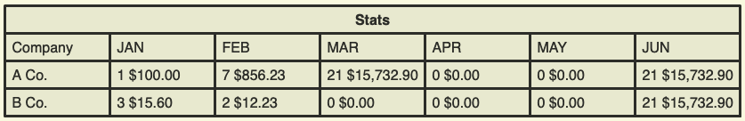

a
|> hidden
|> complex
I consider myself part of the school of thought, to give it name, of Alan Kay and Bret Victor. Sometimes I think we are just doing complex thing because... I actually have no idea why.
As an example, granted naïve, let's imagine the following:
A client wants to show that data in its webpage. A table that shows companies accumulated amount in orders per month plus the number of total orders. The integer value next to the decimal quantity is the orders counter. So, how to provide that data?
There are a lot of ways to approach this. The one I want to tackle is the db approach.
Let's start simple. I can get the records where a column will have the order's count, another column can have the total per month and the basic: id, name, etc:
Elixir codeSELECT companies.id, companies.name, DATE_PART('month', orders.created_at)::int AS month, DATE_PART('year', orders.created_at)::int AS year, SUM(COALESCE(orders.total, 0.0)) AS total, COUNT(DISTINCT (orders.id)) AS count FROM orders INNER JOIN companies ON orders.buyer_id = companies.id GROUP BY companies.id, companies.name, DATE_PART('year', orders.created_at), DATE_PART('month', orders.created_at) ORDER BY companies.name ASC;
Something like that will do the job. It will produce:
| id | name | month | year | total | count |
|---|---|---|---|---|---|
| 300 | A Co. | 1 | 2021 | 588.4000 | 1 |
| 300 | A Co. | 3 | 2021 | 12448.9900 | 1 |
| 300 | A Co. | 4 | 2021 | 363.0000 | 1 |
| 300 | A Co. | 5 | 2021 | 3440.2600 | 2 |
We can use that although there are missing months and the clients wants to show all months of the year. We could that from the db. Do some tricks at the backend to fill the gaps and then deliver it to the frontend.
Perhaps we can manage to get months as columns:
Elixir codeSELECT branches.id, branches.name, COALESCE((CASE WHEN DATE_PART('month', orders.created_at)::int = 1 THEN COUNT(DISTINCT (orders.id)) || ' ' || SUM(COALESCE(orders.total, 0.0)) END), '0 0.0') "JAN", COALESCE((CASE WHEN DATE_PART('month', orders.created_at)::int = 2 THEN COUNT(DISTINCT (orders.id)) || ' ' || SUM(COALESCE(orders.total, 0.0)) END), '0 0.0') "FEB", COALESCE((CASE WHEN DATE_PART('month', orders.created_at)::int = 3 THEN COUNT(DISTINCT (orders.id)) || ' ' || SUM(COALESCE(orders.total, 0.0)) END), '0 0.0') "MAR", COALESCE((CASE WHEN DATE_PART('month', orders.created_at)::int = 4 THEN COUNT(DISTINCT (orders.id)) || ' ' || SUM(COALESCE(orders.total, 0.0)) END), '0 0.0') "APR", COALESCE((CASE WHEN DATE_PART('month', orders.created_at)::int = 5 THEN COUNT(DISTINCT (orders.id)) || ' ' || SUM(COALESCE(orders.total, 0.0)) END), '0 0.0') "MAY", COALESCE((CASE WHEN DATE_PART('month', orders.created_at)::int = 6 THEN COUNT(DISTINCT (orders.id)) || ' ' || SUM(COALESCE(orders.total, 0.0)) END), '0 0.0') "JUN", FROM orders INNER JOIN branches ON orders.buyer_id = branches.id GROUP BY branches.id, branches.name, DATE_PART('year', orders.created_at), DATE_PART('month', orders.created_at) ORDER BY branches.name ASC;
which produces:
| id | name | JAN | FEB | MAR | APR | MAY | JUN |
|---|---|---|---|---|---|---|---|
| 300 | A Co. | 1 588.4000 | 0 0.0 | 0 0.0 | 0 0.0 | 0 0.0 | 0 0.0 |
| 300 | A Co. | 0 0.0 | 0 0.0 | 1 12448.9900 | 0 0.0 | 0 0.0 | 0 0.0 |
| 300 | A Co. | 0 0.0 | 0 0.0 | 0 0.0 | 1 363.0000 | 0 0.0 | 0 0.0 |
| 300 | A Co. | 0 0.0 | 0 0.0 | 0 0.0 | 0 0.0 | 2 3440.2600 | 0 0.0 |
Excellent! I have just sort of repetitions of the companies but nothing I can collapse in the backend to one single row.
Can we work it in the db, though?
Yep.
Elixir codeSELECT branches.id, branches.name, COALESCE((SELECT COUNT(DISTINCT (orders.id)) || ' ' || SUM(COALESCE(orders.total, 0.0)) FROM orders WHERE orders.buyer_id = branches.id AND orders.status IN(1, 2, 3, 4, 5, 6, 7) AND DATE(orders.created_at) >= (date_part('year', CURRENT_DATE) || '-01-01')::timestamp AND DATE(orders.created_at) <= (date_part('year', CURRENT_DATE) || '-01-31')::timestamp AND branches.id IN(300) ), '0 0.0') "JAN", COALESCE((SELECT COUNT(DISTINCT (orders.id)) || ' ' || SUM(COALESCE(orders.total, 0.0)) FROM orders WHERE orders.buyer_id = branches.id AND orders.status IN(1, 2, 3, 4, 5, 6, 7) AND DATE(orders.created_at) >= (date_part('year', CURRENT_DATE) || '-02-01')::timestamp AND DATE(orders.created_at) <= (date_part('year', CURRENT_DATE) || '-02-28')::timestamp AND branches.id IN(300) ), '0 0.0') "FEB", COALESCE((SELECT COUNT(DISTINCT (orders.id)) || ' ' || SUM(COALESCE(orders.total, 0.0)) FROM orders WHERE orders.buyer_id = branches.id AND orders.status IN(1, 2, 3, 4, 5, 6, 7) AND DATE(orders.created_at) >= (date_part('year', CURRENT_DATE) || '-03-01')::timestamp AND DATE(orders.created_at) <= (date_part('year', CURRENT_DATE) || '-03-31')::timestamp AND branches.id IN(300) ), '0 0.0') "MAR", COALESCE((SELECT COUNT(DISTINCT (orders.id)) || ' ' || SUM(COALESCE(orders.total, 0.0)) FROM orders WHERE orders.buyer_id = branches.id AND orders.status IN(1, 2, 3, 4, 5, 6, 7) AND DATE(orders.created_at) >= (date_part('year', CURRENT_DATE) || '-04-01')::timestamp AND DATE(orders.created_at) <= (date_part('year', CURRENT_DATE) || '-04-30')::timestamp AND branches.id IN(300) ), '0 0.0') "APR", COALESCE((SELECT COUNT(DISTINCT (orders.id)) || ' ' || SUM(COALESCE(orders.total, 0.0)) FROM orders WHERE orders.buyer_id = branches.id AND orders.status IN(1, 2, 3, 4, 5, 6, 7) AND DATE(orders.created_at) >= (date_part('year', CURRENT_DATE) || '-05-01')::timestamp AND DATE(orders.created_at) <= (date_part('year', CURRENT_DATE) || '-05-31')::timestamp AND branches.id IN(300) ), '0 0.0') "MAY", COALESCE((SELECT COUNT(DISTINCT (orders.id)) || ' ' || SUM(COALESCE(orders.total, 0.0)) FROM orders WHERE orders.buyer_id = branches.id AND orders.status IN(1, 2, 3, 4, 5, 6, 7) AND DATE(orders.created_at) >= (date_part('year', CURRENT_DATE) || '-06-01')::timestamp AND DATE(orders.created_at) <= (date_part('year', CURRENT_DATE) || '-06-30')::timestamp AND branches.id IN(300) ), '0 0.0') "JUN" FROM branches WHERE branches.status <> 'deleted' AND branches.id IN(300) ORDER BY branches.name ASC;
drum rolls
| id | name | JAN | FEB | MAR | APR | MAY | JUN |
|---|---|---|---|---|---|---|---|
| 300 | Casa | 1 588.4000 | 0 0.0 | 1 12448.9900 | 1 363.0000 | 2 3440.2600 | 0 0.0 |
Ok, so we satisfied the client. We got the table. I'm confident, there is possible better ways to do it. Still, I do think we are just moving complexity and I'm not longer sure this is actually worth it. It doesn't matter if the complexity moves to a higher language (which in itself is hidden complexity) in the backend or the frontend. At some point, complexity will appear.
Is it worth it?
Can we use this electric charges flux to to something... hmmm better?
Is it even possible?